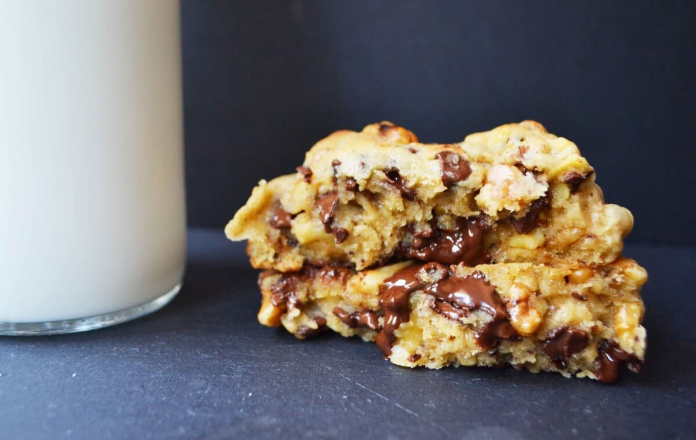

Levain Bakery Chocolate Chip Cookie

Description
This recipe comes from Modern Honey.
It is a close re-creation of the infamous chocolate chip walnut cookies from Levain Bakery.
This copycat recipe is gooey and substantial, perfect for when you're craving the cookies, but aren't in NYC.
Ingredients
- 1 cup cold butter, cut into small cubes
- 1 cup brown sugar
- 1/2 cup sugar
- 2 eggs
- 1 and 1/2 cups cake flour (can substitute for all-purpose flour)
- 1 and 1/2 cups flour
- 1 teaspoon cornstarch
- 3/4 teaspoon baking soda
- 3/4 teaspoon salt
- 2 cups chocolate chips
- 2 cups walnuts, roughly chopped
Steps
- Preheat oven to 410 degrees.
- In a large mixing bowl, cream together cold cubed butter, brown sugar, and sugar for 4 minutes or until creamy.
- Add eggs, one at a time, mixing well after each one.
- Stir in flours, cornstarch, baking soda, and salt. Mix until just combined to avoid overmixing.
- Stir in chocolate chips and walnuts.
- Separate dough into large balls and place on lightly colored cookie sheet. You will fit 4 cookies on one large cookie sheet. The dough makes 8 extra large cookies.
- Bake for 9-12 minutes or until golden brown on the top. Let them rest for at least 10 minutes to set.
Home